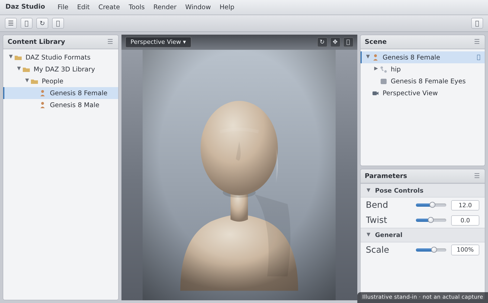
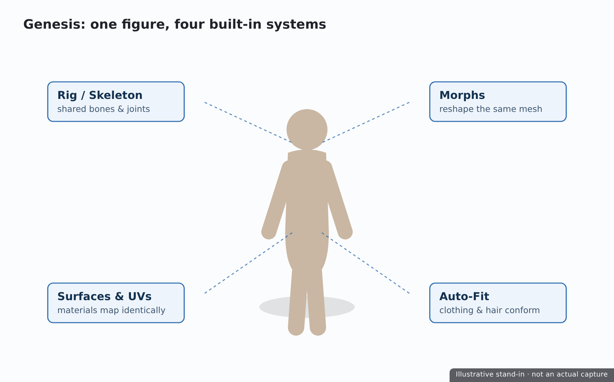

👋 Lesson 1.1: Welcome to Daz Studio
Before you touch a single button, let's answer the big questions: what is Daz Studio, what can you make with it, and how does it fit next to Blender and Unreal? By the end you'll know exactly why Daz is one of the fastest ways to get a believable character into your work.
🎯 Learning Objectives
By the end of this lesson, you will be able to:
- Explain what Daz Studio is and the core idea of a Genesis figure
- Describe the main things people create with Daz — and decide whether it fits your goals
- Compare Daz Studio with Blender and Unreal, and see where each one shines
- Understand Daz's cost and licensing model, and what is free
- Check whether your computer is ready to render with Iray
Estimated Time: 40 minutes
Project: Confirm your goals, check your hardware, and create a free Daz 3D account so you're ready to install in Lesson 1.2.
In This Lesson
What Is Daz Studio?
Daz Studio is a free 3D application for creating figures, scenes, and photoreal renders. What sets it apart from tools like Blender or Maya is its philosophy: instead of building a human character out of raw geometry, you start with a ready-made, fully rigged human figure and customize it. You shape the face, pose the body, add hair and clothing, set up lights, and render — often reaching striking, realistic results in a single sitting.
Think of it as the difference between sculpting a mannequin from clay and starting with a professional, poseable mannequin that already has a skeleton, skin, and a wardrobe. Daz hands you the mannequin. Your creativity goes into direction — who this character is, how they stand, how the light falls — rather than into building anatomy from scratch.
💡 The one-sentence version: Daz Studio is a free 3D "virtual photography and posing studio" built around pre-made human figures you customize, light, and render.

What You Can Create
Daz is a general-purpose 3D tool, but its sweet spot is people and character-driven scenes. Here's what artists reach for it to make:
| Use Case | What It Looks Like | Why Daz Is Good At It |
|---|---|---|
| Character portraits & pin-ups | A single figure, beautifully lit and rendered | Photoreal skin and lighting out of the box with Iray |
| Comic & book illustration | Consistent characters across many panels | Save a character once, re-pose them endlessly |
| Concept & reference art | Posed anatomy for drawing over | Any pose, any angle, correct proportions |
| Story & scene renders | Multiple figures in an environment | Huge library of props, sets, hair, and clothing |
| Characters for game & film pipelines | A base figure exported elsewhere | Bridges send figures straight to Blender & Unreal |
📖 Definition
Render: the finished 2D image (or video frame) the software produces after calculating how light bounces around your 3D scene. In Daz, the main render engine is Iray, which we'll use throughout Module 3.
What Daz is not built for: from-scratch hard-surface modeling (cars, buildings, weapons), heavy VFX simulation, or being a game engine. For those you'd use Blender or Unreal — which is exactly why this course ends by connecting the three.
Genesis: The Heart of Daz
Almost everything in Daz revolves around the Genesis figure. Genesis is Daz's family of base human figures, refined over many generations. The two you'll meet most today are:
- Genesis 8 (G8) — the most widely supported generation, with an enormous library of characters, clothing, and poses.
- Genesis 9 (G9) — the newest generation, with a unified base figure and improved anatomy. Growing library.
A single Genesis figure is far more than a static mesh. It ships with everything a character needs:

| Built-in Part | What It Does | We Cover It In |
|---|---|---|
| Rig (skeleton) | Lets you pose the figure by bending joints | Lesson 2.1 — Posing |
| Morphs | Sliders that reshape the face and body | Lesson 2.2 — Shaping |
| Surfaces & UVs | Define skin, eyes, nails — how materials apply | Lesson 2.3 — Materials |
| Auto-fit compatibility | Lets clothing and hair conform to the figure | Lesson 3.1 — Building a Scene |
✅ Pro Tip
When you buy or download a "character" for Daz (say, "Victoria 8"), you're really getting a bundle of morphs and materials that load onto a Genesis base figure. The base figure is the foundation; characters are presets applied to it. Understanding this makes the entire content ecosystem click.
⚠️ Important Note: Content is usually built for a specific generation. A Genesis 8 outfit won't automatically fit a Genesis 9 figure without a conversion product. When you're starting out, pick one generation (G8 is the safest for sheer content volume) and stick with it.
Where Daz Fits (vs Blender & Unreal)
If you've taken the Blender or Unreal courses, you might wonder where Daz belongs. The short answer: Daz is a character source. It's the fastest place to create a person, which you can then finish in Daz or hand off to another tool.
| Tool | Primary Job | Superpower | Learning Curve | Cost |
|---|---|---|---|---|
| Daz Studio | Pose, shape & render human figures | Photoreal characters, fast | Gentle | Free app; paid content |
| Blender | Model, sculpt, animate, render anything | Total creative control | Steep | Free & open source |
| Unreal Engine | Real-time interactive worlds & games | Real-time rendering at scale | Steep | Free (royalty at scale) |
They aren't competitors so much as stages in a pipeline. A common workflow looks like this:
💡 Why this course ends with bridges
Module 5 covers the Daz to Blender Bridge and the Daz to Unreal Bridge. That's where your Daz skills plug directly into the Blender and Unreal courses — you make the character here, then finish it in the tool that fits the job.
Cost, Licensing & What's Free
One of the most confusing things for newcomers is the money question. Let's make it simple.
✅ The application is free
Daz Studio itself costs nothing to download and use, including its Iray renderer. You can install it, load figures, pose, light, and render commercially — without paying for the software.
⚠️ Content is where money enters
The business model is content: characters, clothing, hair, sets, and poses sold in the Daz Store. Some is free; a lot is paid. You do not need to spend money to complete this course — Daz gives every new account a generous Starter Essentials bundle (base Genesis figures, some hair and clothing, basic materials), which is all we need.
Licensing in plain English
- Standard license (default with most content) — you may use your renders commercially (prints, book covers, comics, etc.).
- Interactive / game license — a separate add-on needed if you export a figure's mesh into a game you distribute. This matters for the Unreal bridge if you ship a product.
⚠️ Important Note: Rendered images are broadly fine to use commercially. Distributing the 3D mesh itself (for example, inside a shipped game) is what may require an interactive license. We'll flag this again in Lesson 5.2 (Unreal Bridge). When in doubt, check the product's readme on the Daz store page.
System Requirements
Daz Studio runs on modest machines, but Iray rendering loves a good GPU. Iray is a GPU-accelerated engine: with a supported NVIDIA card, renders that take minutes on a CPU can finish in seconds.
| Component | Minimum | Recommended for Iray |
|---|---|---|
| OS | Windows 10 / macOS 11 | Windows 11 (64-bit) |
| RAM | 8 GB | 16–32 GB |
| GPU | Any (CPU rendering works, but slow) | NVIDIA RTX with 8 GB+ VRAM |
| Disk | ~10 GB for app + starter content | SSD with 50 GB+ (content grows fast) |
⚠️ Watch Out — VRAM is the real ceiling
Iray renders on your GPU only if the entire scene fits in video memory (VRAM). If a scene is too big, Iray silently "drops to CPU" and slows to a crawl. An 8 GB card is a comfortable starting point; 12 GB+ gives you room for detailed multi-figure scenes. We'll cover how to keep scenes within budget in Module 3.
✅ No NVIDIA card? You can still take this course
Everything except fast rendering works on any machine, and Iray will still render on your CPU (just more slowly). Mac users render on CPU as well. You'll learn every concept the same way — renders simply take longer to resolve.
Hands-on: Get Ready
We install Daz in the next lesson. Your job right now is to get everything lined up so the install goes smoothly — and to lock in what you want out of this course.
🏋️ Exercise 1: Readiness Checklist
Objective: Confirm you're set up to install and render.
Steps:
- Find your GPU: on Windows, open Task Manager → Performance → GPU and note the model and dedicated memory (VRAM). On macOS, check About This Mac.
- Write down whether you have an NVIDIA card and how much VRAM it has.
- Confirm you have at least ~20 GB of free disk space for the app plus starter content.
- Create a free Daz 3D account at daz3d.com (top-right → Sign In → Register). You'll need it to download the app and claim your free Starter Essentials in Lesson 1.2.
💡 Hint — where's my VRAM number?
In Windows Task Manager's GPU panel, look for "Dedicated GPU memory." On a laptop with two GPUs, the NVIDIA one is the card Iray will use — make sure that's the one you note.
🏋️ Exercise 2: Name Your Goal
Objective: Give yourself a target so every later lesson has a purpose.
In a sentence, finish this: "By the end of this course I want to make ______." A character portrait? A comic panel? A figure for a Blender scene or an Unreal level? Keep it somewhere visible — in the capstone (Lesson 5.3) you'll build exactly this kind of piece across the whole pipeline.
🎯 Quick Quiz
Question 1: What is a "Genesis figure" in Daz Studio?
Question 2: Which statement about Daz's cost is accurate?
Question 3: Iray renders fastest when…
Beginner Mindset
✅ Do's
- Pick one figure generation to start (Genesis 8) so all your content is compatible.
- Use the free Starter Essentials before spending anything — it's enough to learn every skill in this course.
- Think like a photographer. Your job in Daz is direction and lighting, not building anatomy.
- Save early, save often, and keep your scenes small while learning to stay inside VRAM.
❌ Don'ts
- Don't buy a big content haul on day one. Wait until you know what your projects actually need.
- Don't mix generations (G8 clothing on a G9 figure) until you understand conversion products.
- Don't expect Daz to be a modeler. For custom props and hard-surface work, that's Blender's job.
💡 Pro Tips
- The Daz forums are one of the friendliest, deepest 3D knowledge bases online — search there first when stuck.
- Watch the file sizes: characters and HD morphs are large. An SSD keeps loading snappy.
- Every "character" you'll ever buy is just morphs + materials on a Genesis base — internalize that and the store stops being confusing.
Summary
🎉 Key Takeaways
- Daz Studio is a free 3D app for posing, shaping, lighting, and rendering ready-made human figures.
- Genesis figures are the heart of Daz — rigged, morphable, surfaced base humans that all content builds on.
- Daz's strength is fast, photoreal characters; Blender and Unreal handle modeling and real-time worlds, and bridges connect them.
- The app is free; content is the business model, but free Starter Essentials covers this whole course.
- Iray renders fastest on a supported NVIDIA GPU with enough VRAM to hold the scene.
📚 Additional Resources
🚀 What's Next?
In Lesson 1.2 — Installing Daz & the Content Library, we'll download Daz Studio, set up the Install Manager, claim your free Starter Essentials, and get your first Genesis figure onto your drive so it's ready to load.
🎉 You're oriented!
You now understand what Daz is, why it exists, and where it fits. That context makes everything ahead click faster. Let's get it installed.